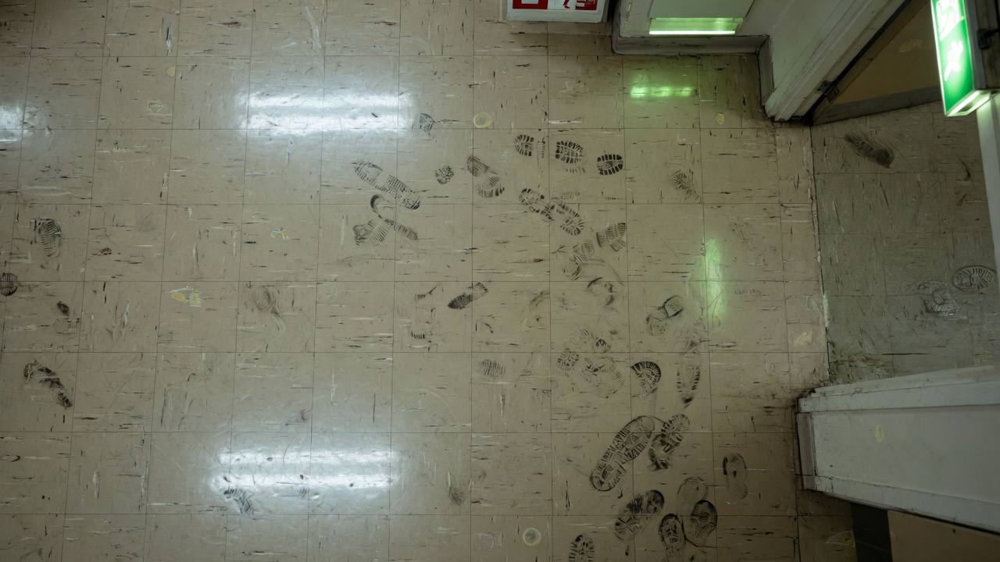
#01 The Institutional Soil
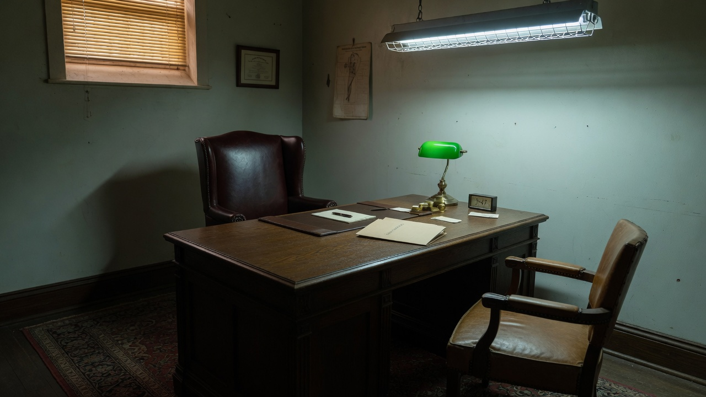
#02 The Desk Hierarchy
#03 The Screen as Vessel
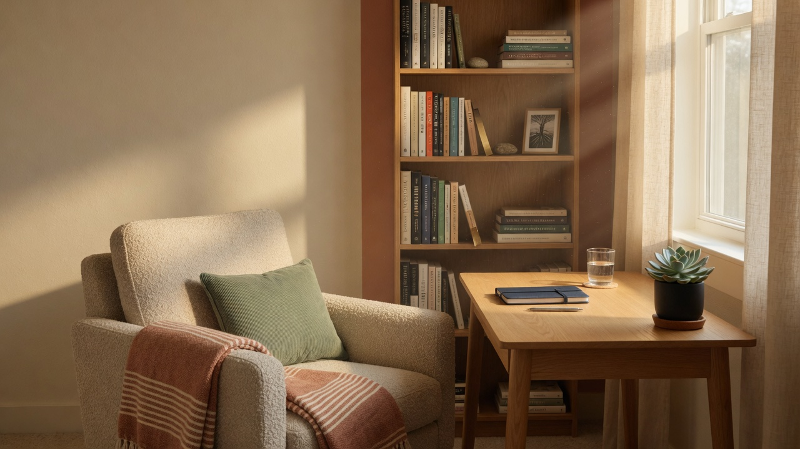
#04 The Designed Space
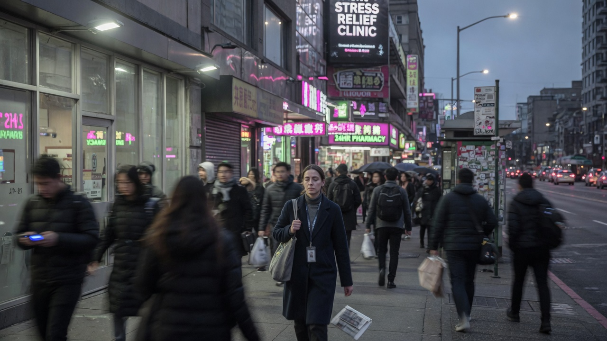
#05 The Commute That Erodes
#06 The Closed Laptop at Day's End
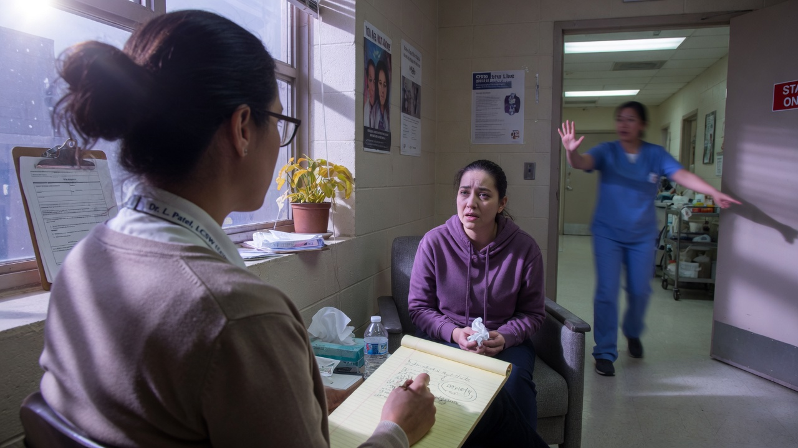
#07 The Emergency Interruption
#08 The Democratic Frame
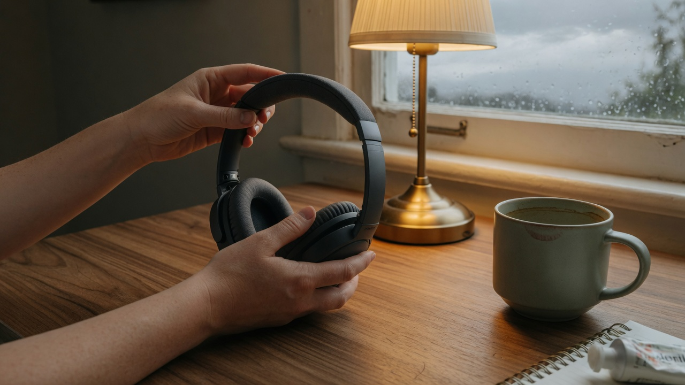
#09 The Sensory Sanctuary
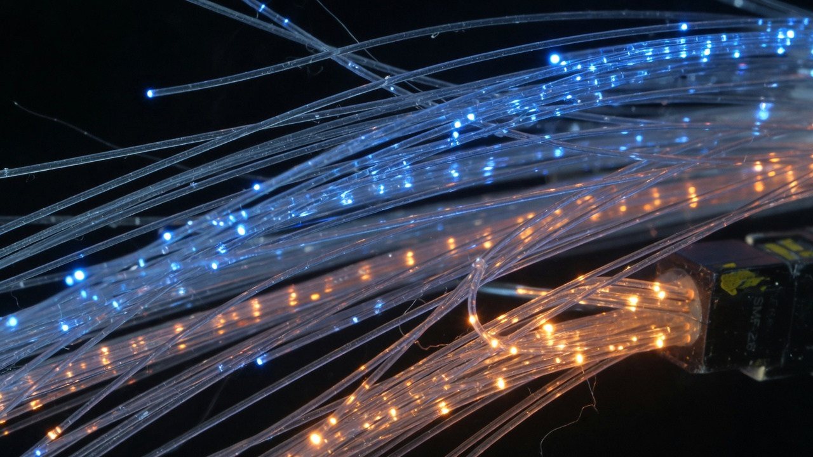
#10 The Infrastructure That Holds
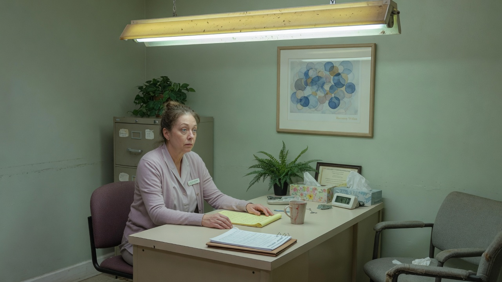
#11 The Depersonalized Gaze
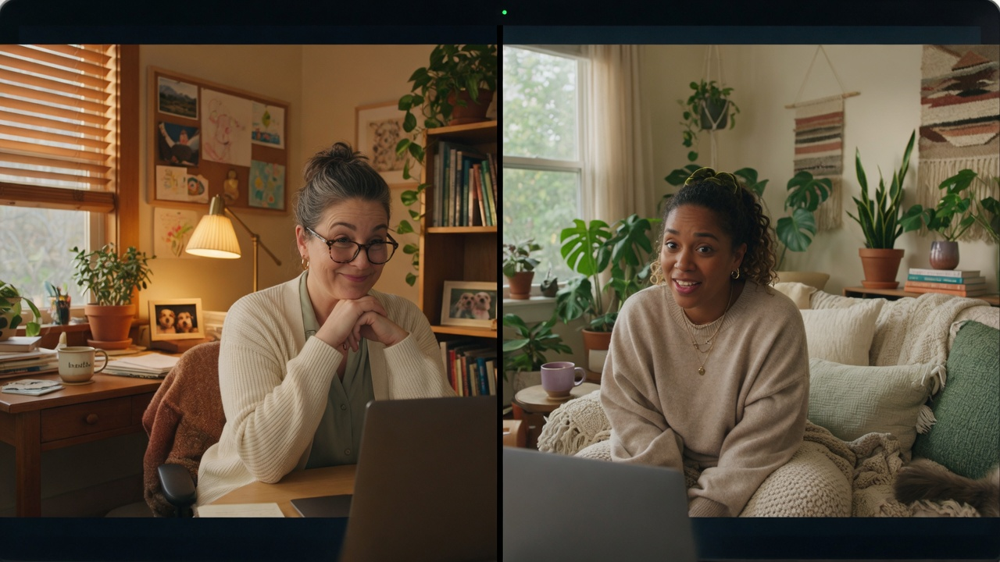
#12 The Screen as Transitional SpaceHERO
#13 The Brain Thinning Under Stress
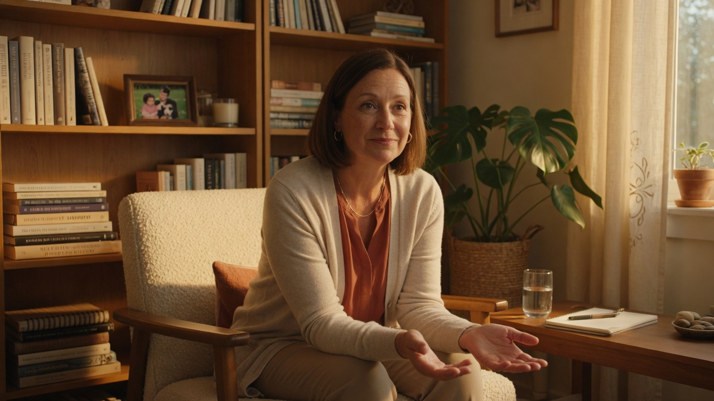
#14 The Return to Presence
#15 The Path Dependence
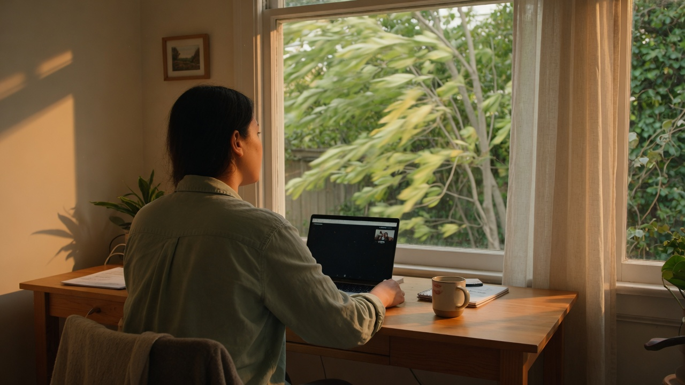
#16 The Window to Outside While Working
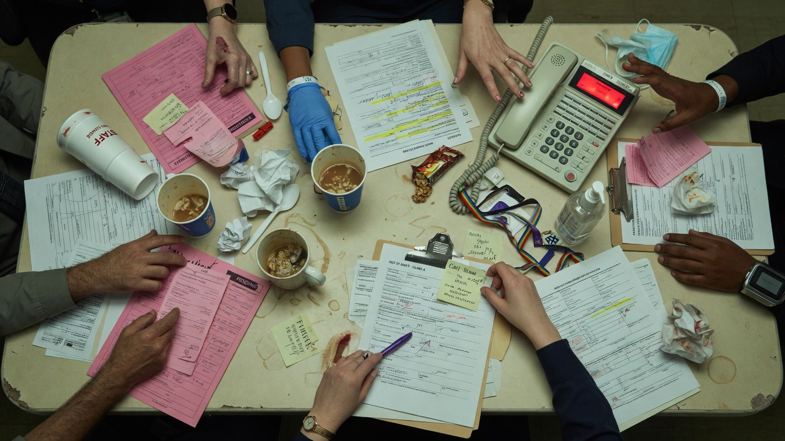
#17 The Colleague Interruption Chaos
#18 The Mycelium Network
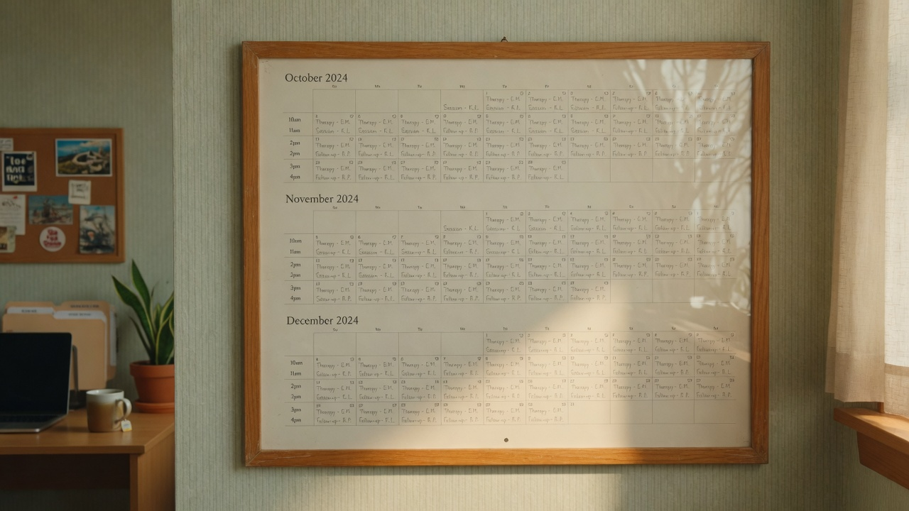
#19 The Continuity Thread
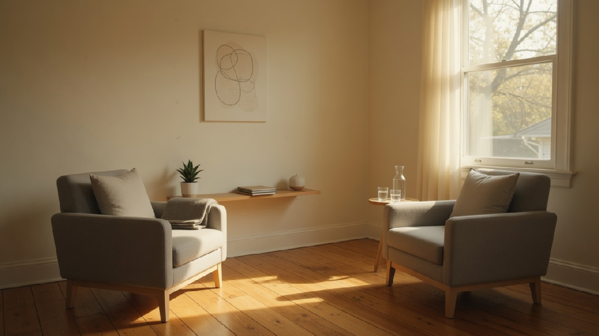
#20 The Room That Doesn't Instruct